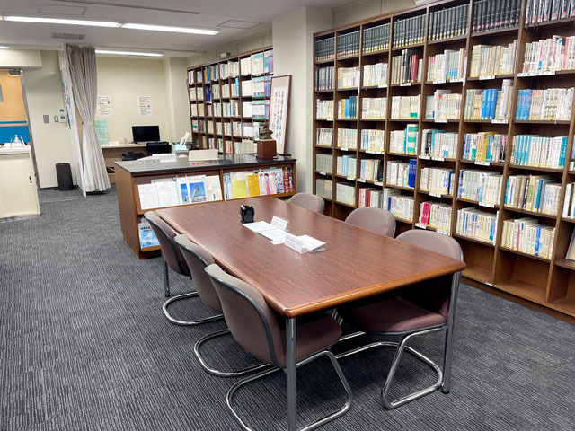
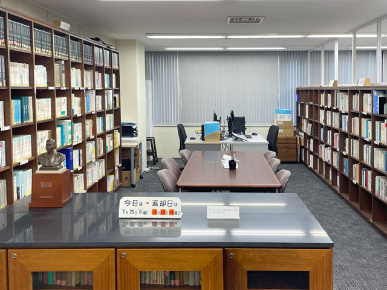
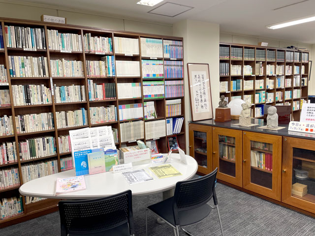
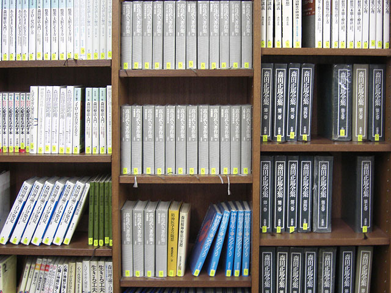
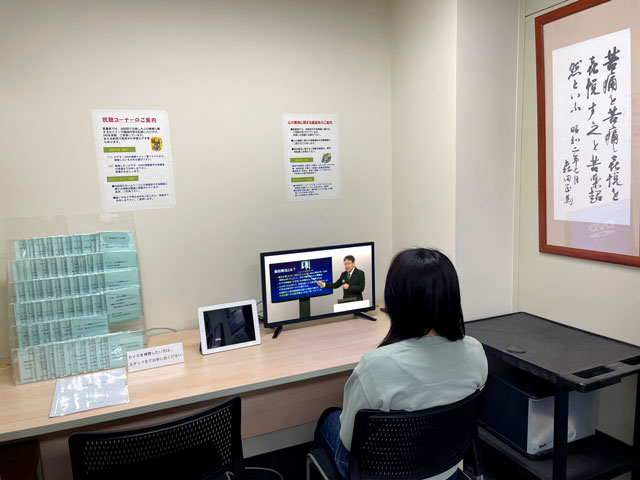
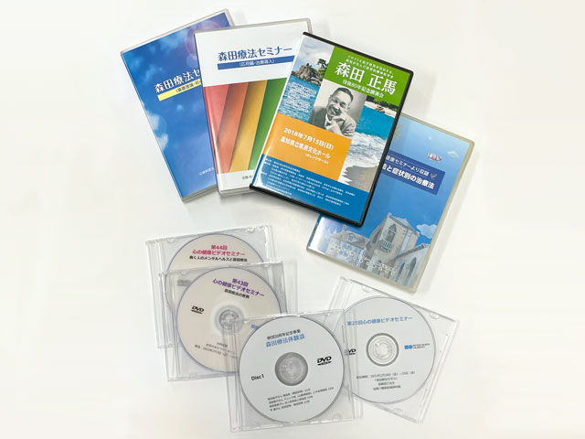

メンタルヘルス図書室では、心の健康に関する図書約3000冊とDVD約100本をご用意しています。また、ご自分の症状に合わせて選べる療法別・症状別の図書の閲覧や、コンピュータを使った検索サービス、視聴覚コーナーなど、ご利用される方に便利な環境（無料）をご用意しています。
当図書室は大阪府立図書館のホームページ「大阪近辺類縁機関案内」で紹介されています。
ご利用日時（開室日時）
- 月曜日〜金曜日
- 土曜日・日曜日・祝祭日、および年末年始・盆休・整理期間中は休室日
- 開室時間は午前10時〜午後4時45分（午後12時～午後1時は休室）
閲覧方法
- 閲覧は無料です
- 書架より自由に選択し、閲覧いただけます。


図書貸出し
- 貸し出しは無料です
- 図書貸出しをご希望の場合は、運転免許証・健康保険証・通学証明書、又は身分を証明できるものをご提示いただき、所定の申込書にご記入ください。
お一人3冊まで、3週間の貸出しを受付けます。
なお、一部の図書とDVDについては貸出しはできません。
情報サービス・コピーサービス
- 図書室所蔵の図書・資料はコンピュータによってデータ管理しています。したがって神経症のタイプ別、あるいは精神療法別にどんな図書があるか知りたい場合は、情報の提供ができます。
- 図書資料のコピーをご希望の方には、一枚30円でコピーサービスを受付けています。ただし一部の図書・資料については版権の都合などでコピーできない場合があります。


視聴覚コーナー
- 図書室では、視聴覚コーナーを設けて、DVDを自由に視聴いただけます。
- DVDの視聴は無料です
＞＞DVD一覧はこちらから

